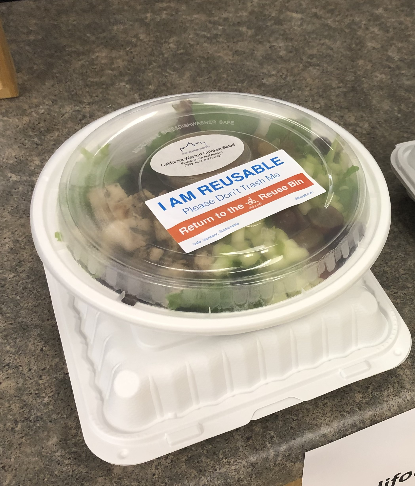
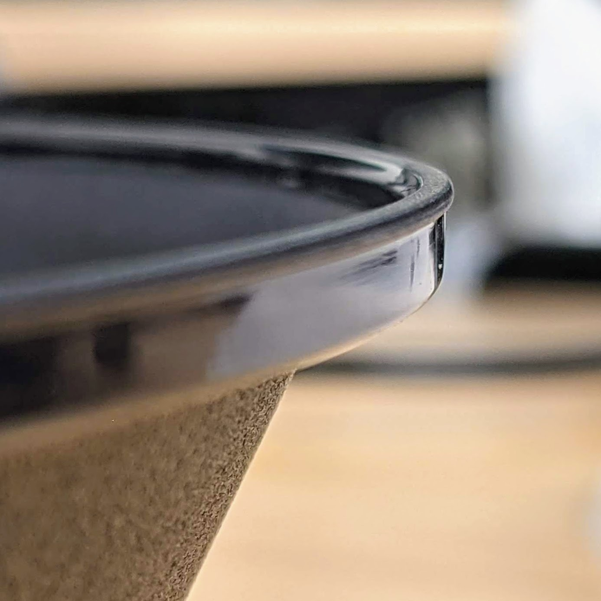
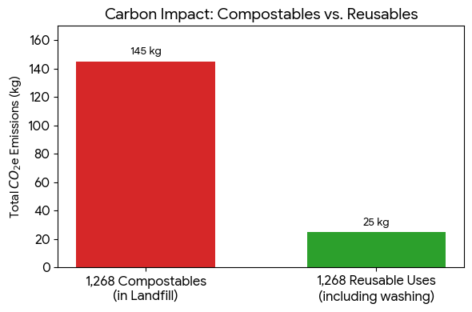

Dishcraft Robotics
My Role
Director of Product -> Sr. Director, Product and Customer Solutions
Focused a team of 20+ engineers to scale product maturity from a single prototype to a fully automated, operational dishwashing hub.
Pandemic Pivot
Shortly after I joined Dishcraft, the pandemic shut down all of our customers. Our revenue dropped to zero as there was suddenly no need for anyone to be using large quantities of ceramic dishes as all large cafeterias remained closed. I led a pivot to a reusable container delivery service. We quickly were able to get revenue again while we learned from using and cleaning off the shelf containers. This gave us time to design a custom reusable container designed for our end-to-end automated cleaning system.


A customer request is just one data point
One piece of feedback I received on our custom container was that it needed to be absolutely liquid tight. A customer took a sample container filled with water and shook it upside down to cause a leak and said it wasn’t good enough. One interesting bit I learned about plastic containers during this time is that as you make a better lid seal, you make a harder to open container. For this use case at Dishcraft, I decided to look at existing containers our customers used and various popular containers already on the market to see what were the current standards. I found that many of the most popular models, including those used at the customer who gave our container the shake down, were not 100% liquid tight. The ones that were liquid tight left fingers hurting and raw after opening and closing lids several times in a row. After several iterations we landed on a lid design that allowed a few drops of water to escape if shaken upside down, but was easier to open and close than comparable containers on the market. Our customers loved them and their team members’ fingers appreciated the extra comfort during their work day.
Monthly Metric Reports
With sites back up and running, I started sharing a monthly metric report to all of our customers. This documented usage, diner return percentage and compared environmental metrics of what they actually used with our service compared to what they were using before using our service. I provided this in 2 formats. First was a pdf infographic that could be shared up to their managers and would fit nicely in a slide deck. The second was an image formatted to fit onto TV screens that often cycled through company news at the cafeterias. This simple monthly report gave the person that signed our contract something that made them look good every month and helped establish our service as part of the daily culture of the entire company.
